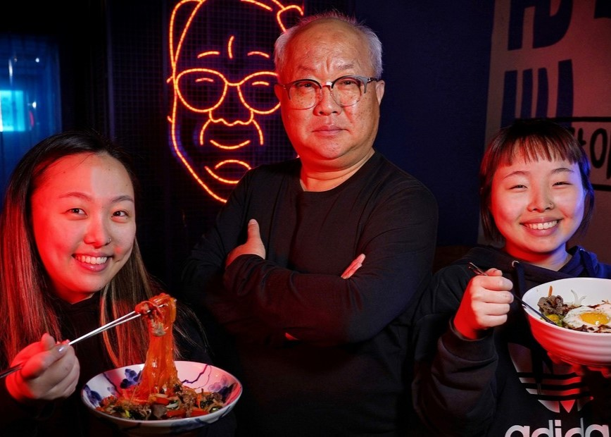
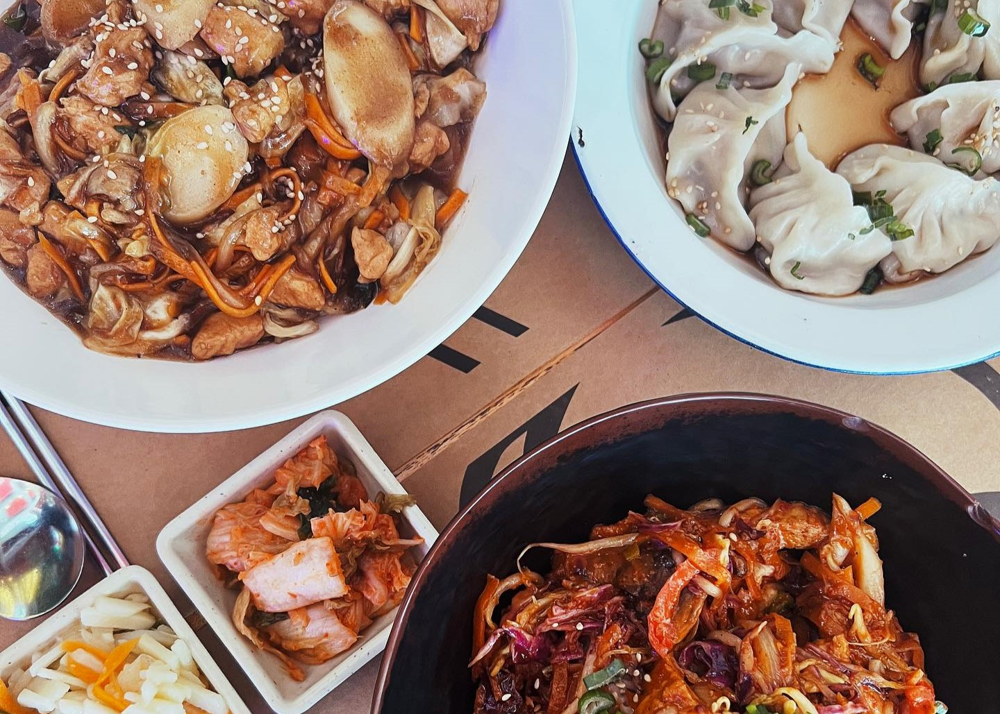
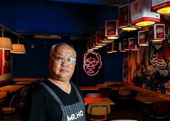

NUESTRA HISTORIA
Mr Ho recrea platos tradicionales coreanos con tendencias modernas
Con un local llamativo, luminoso y atravesado por
buena energía para todas las personas
Martin Ho y su familia son los fundadores de
Mr Ho. Comenzó en Morón, en la zona comercial
de Flores y al poco tiempo, se mudó a Retiro,
donde la clientela es mucho más variada.
Gano el festival gastronomico "Buenos Aires
Celebra" y participo en varios programas
televisivos como "Familias frente a frente"
con su esposa e hijas.


